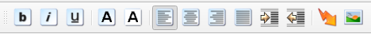
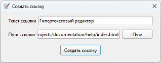

Панель форматирование

выделить текст жирным
текст италик
подчёркивание текста
установить цвет шрифта (иконка окрашивается в соответствии с цветом шрифта)
установить цвет фона (иконка окрашивается в соответствии с цветом фона шрифта)
установить выравнивание по левому краю
установить выравнивание по центру
установить выравнивание по правому краю
установить выравнивание по ширине
увеличить отступ
уменьшить отступ
добавить гиперссылку
Окно создания гиперссылки

добавить изображение
При добавлении гиперссылки и изображения производится попытка получить и установить относительный путь